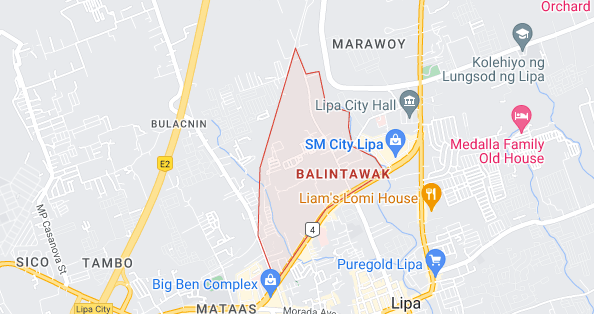

Balintawak is situated at approximately 13.9530, 121.1588, in the island of Luzon. Elevation at these coordinates is estimated at 344.2 meters or 1,129.3 feet above mean sea level.
Balintawak is a barangay in the city of Lipa, in the province of Batangas. Its population as determined by the 2020 Census was 19,278. This represented 5.17% of the total population of Lipa.